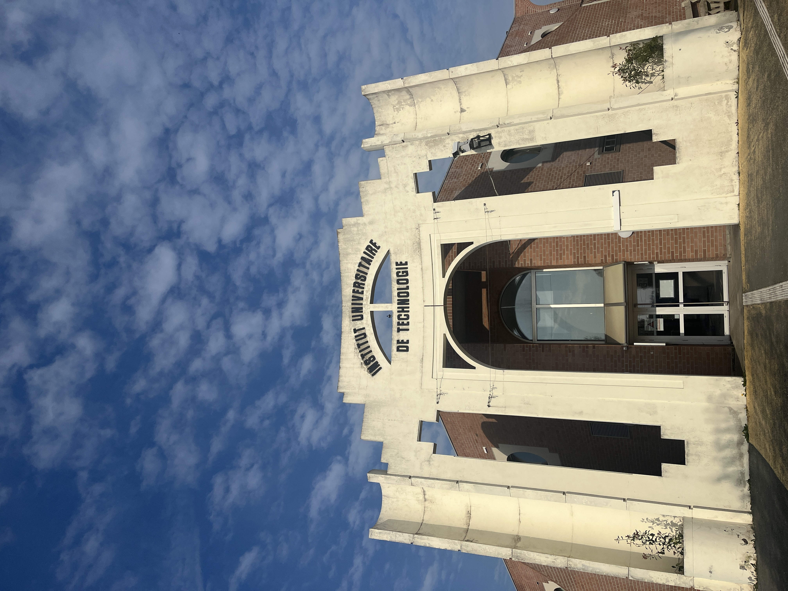

My trip to France was an amazing and unforgettable experience. As a multimedia student, I had the opportunity to attend school there and see how students learn in a different environment. I explored a new culture, tried different foods, learned how to use new equipment, and met new people. This experience helped me become more independent and made me realize what path of design I would like to pursue. It’s something I will always remember.